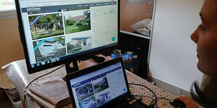

Dordogne
Excédés par le confinement, les Parisiens veulent leur maison en Périgord
Le budget de cette clientèle est assez important : « 300 000 euros environ, contre 150 000 euros en moyenne pour les locaux. » © Crédit photo : Loïc Mazalrey
Immobilier - Contre toute attente, certains professionnels de l'immobilier voient affluer les demandes d'acheteurs potentiels
Faut-il s'attendre à un boom des ventes immobilières en Dordogne après le déconfinement?? Contre toute attente, les marchands de biens qui ont maintenu une activité, ne serait-ce que réduite, ont vu bondir le nombre de visites sur leur site Internet et enregistré une recrudescence des demandes relatives aux achats de « maison avec jardin ».
"Très vite, mon téléphone s'est mis à sonner"
«Au début, j'ai pensé qu'il n'allait rien se passer pendant deux mois et puis, très vite, mon téléphone s'est mis à sonner, confie Patricia Sabatier, agent immobilier du réseau IAD à Bergerac. Au bout du fil, des Parisiens, en grande majorité retraités, qui ne supportent plus de rester cloîtrés chez eux, sans balcon, avec le bruit des enfants qui jouent dans la cage d'escalier toute la journée.»
Bon nombre d'entre eux ressentaient sans doute l'envie de quitter la capitale avant la pandémie de Covid-19. Le confinement a eu raison de leurs dernières résistances. « La période a eu l'effet d'un coup d'accélérateur », observe Patricia Sabatier, qui se prépare à vivre un « après-confinement » chargé.